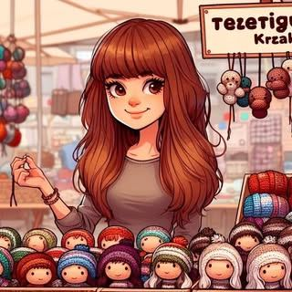
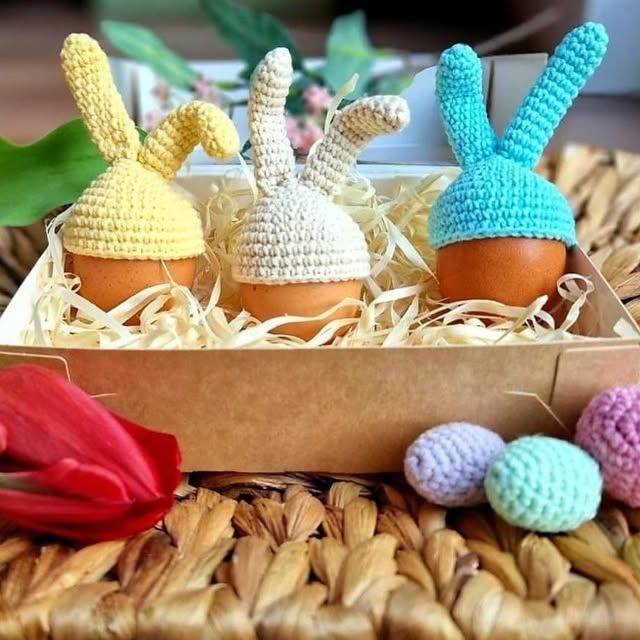

O twórczyni
Cześć, jestem Tetiana — osoba stojąca za każdym oczkiem w TetiGurumi.
Tworzę ręcznie szydełkowane zabawki, dekoracje i prezenty: figurki amigurumi, ozdoby sezonowe, koszyki, torby i prace na indywidualne zamówienie. Zaczęłam szydełkować z osobistej potrzeby — by tworzyć rzeczy, które są przemyślane i ciepłe w świecie pełnym masowej produkcji. Z czasem zaczęli mnie prosić o prace inni, i tak powstało TetiGurumi.
Każda praca, którą robię, dostaje tę samą uwagę, jaką dałabym czemuś do własnego domu. Materiały są starannie dobierane, wykończenie wymaga czasu, i nic nie opuszcza moich rąk, dopóki nie jest gotowe.
Szydełkowane postaci i zwierzęta, robione z myślą o trwałości.
Dekoracje bożonarodzeniowe, wielkanocne i świąteczne z charakterem.
Praktyczne i ładne — koszyki, torby i akcesoria.
Miękkie, bezpieczne i wyjątkowe prezenty dla noworodków i niemowląt.
Twój pomysł, zrealizowany z troską według Twoich wskazówek.
Oryginalne cyfrowe wzory PDF na amigurumi i projekty szydełkowe.
Uwielbiam spotykać klientów osobiście. Można mnie znaleźć na lokalnych targach rękodzieła i jarmarkach bożonarodzeniowych — ta energia jest wyjątkowa.
Kraków, Polska · Regularny uczestnik jarmarku bożonarodzeniowego

Miękka, oddychająca, przyjazna dla skóry. Używana do większości zabawek i prac dla niemowląt.
Bezpieczne wypełnienie poliestrowe we wszystkich pluszowych zabawkach.
Dopuszczone do zabawek, 6–12 mm, w zależności od rozmiaru pracy.
Jeśli masz wymagania dotyczące materiałów lub alergie, zawsze wspomnij o tym przy zamówieniu.
Przejrzyj sklep lub złóż zamówienie indywidualne.